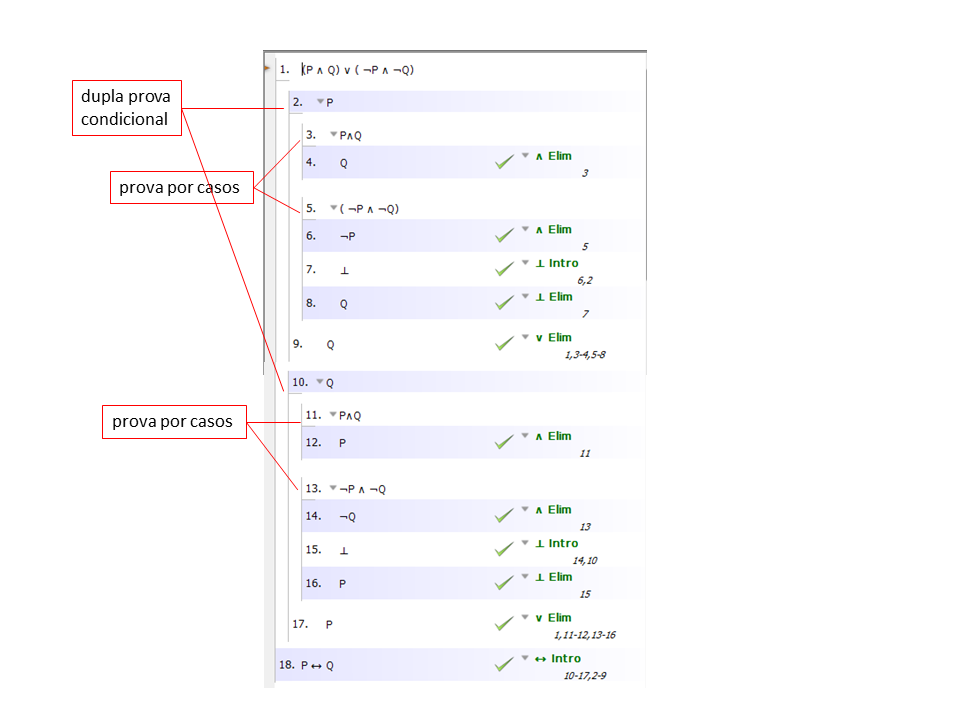

A pergunta 10 do teste T2012-1 é
Mostre através de uma prova formal usandop o software de apoio que P ↔ Q é uma consequência (P ∧ Q) ∨ ( ¬P ∧ ¬Q).
Como o objetivo é um bicondicional P ↔ Q, a estratégia de prova principal é a de fazer uma dupla prova condicional, a primeira para provar que de P obtém Q e a segunda que de Q obtém P.
